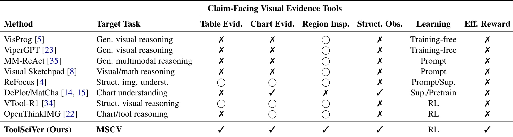
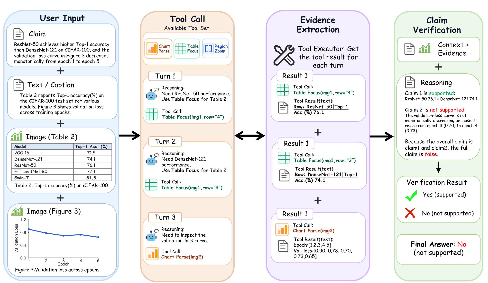
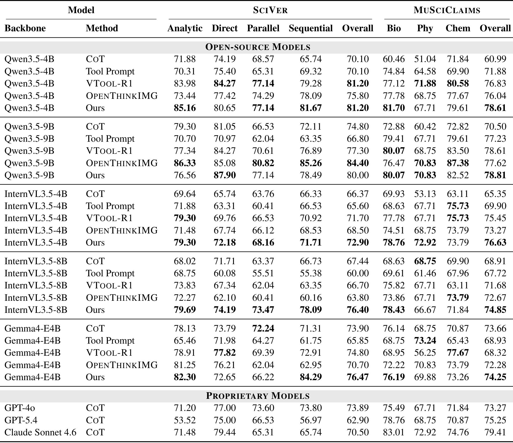
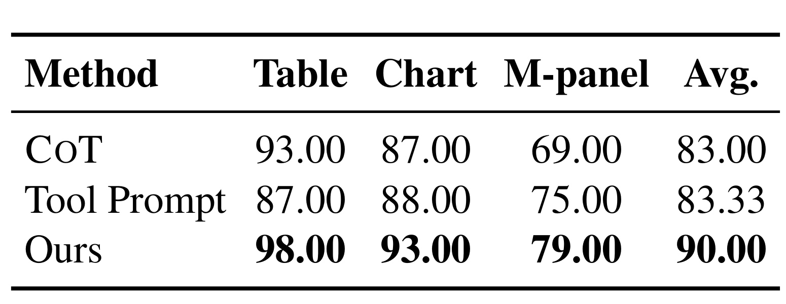
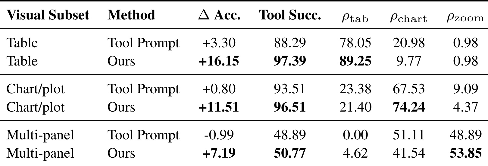
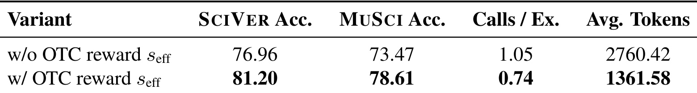
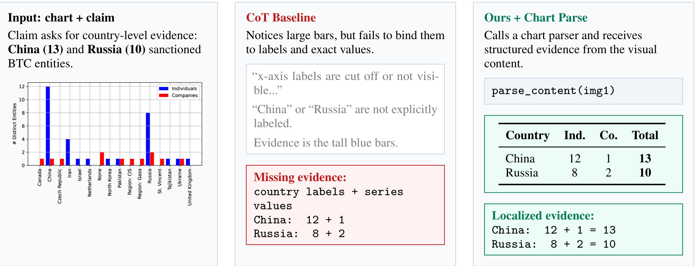
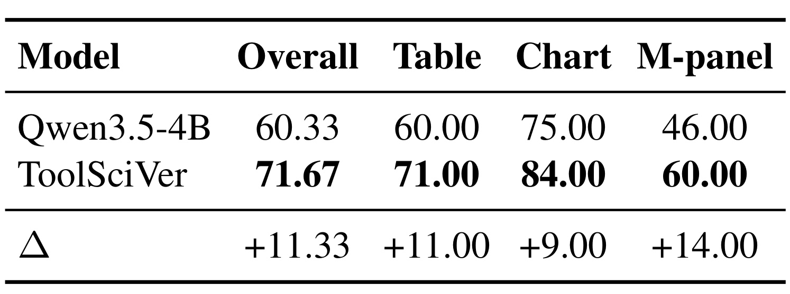
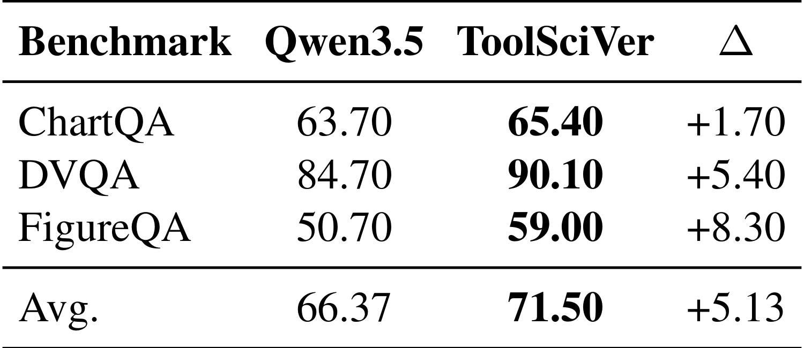
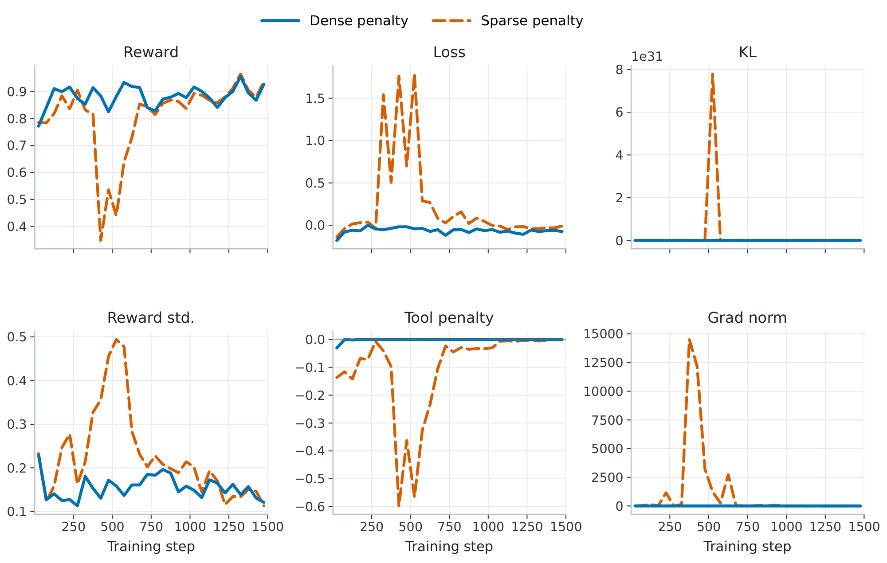

ToolSciVer：用类型感知视觉工具与强化学习验证科学论文中的多模态主张
ToolSciVer 研究的是多模态科学声明核验：给定一条科学主张、论文中的文字上下文以及表格、图表或多面板图，模型需要判断主张得到支持还是被证据反驳。论文作者为 Binglin Zhou、Peng Shi、Ryo Kamoi、Nan Zhang 与 Rui Zhang，一作主机构是宾夕法尼亚州立大学，合作机构包括滑铁卢大学。论文于 2026 年 7 月 17 日提交，入口为 arXiv:2607.16131。作者已公开官方代码仓库，其中包含数据转换、工具执行、GRPO 训练和评测脚本；数据与预计算工具结果仍需使用者另行准备。
这篇工作的关键不在于再给 VLM 增加一个通用“看图”提示，而在于把科学视觉证据拆成三类可以被验证策略选择的操作：表格行列聚焦、图表结构解析和高分辨率区域缩放。策略通过 GRPO 同时学习是否需要工具、应该调用哪种工具、如何写合法参数以及何时停止，并用复合奖励约束正确性、格式、长度、调用效率与工具错误。
科学声明核验的难点不只是读懂文字，而是从表格、图表与多面板科学图形中定位决定性证据，并把这些异质观察组织成可追溯的多步判断；现有 VLM 与通用裁剪类工具在这一证据获取环节仍频繁失败。
1. 背景和问题
1.1 从文本事实核验到多模态科学证据
传统科学事实核验通常把任务处理成“声明—文档”匹配：先找到摘要或全文段落，再判断文字是否支持声明。多模态科学声明核验把困难向前推进了一层。决定性证据可能不是一句可以直接检索的文字，而是表格中某个模型在某个数据集上的一格数值、折线图中两个相邻 epoch 的反常上升、多系列柱状图里的标签和值、多面板图中一个很小的局部区域，或者需要联合多个视觉对象才能完成的关系判断。视觉对象的结构彼此不同，因而“把整张图交给 VLM”并不等于模型已经取得了可用于核验的证据。
论文把每个实例写成声明、视觉集合和可选文字上下文的组合，并把输出统一为 supported 或 refuted。这个二分类表面上很简单，真正的计算负担却在答案之前：模型必须先知道当前声明依赖哪个视觉对象，再在对象内部定位行、列、坐标轴、图例、系列、子图或局部标注，最后把这些证据与文字上下文连接起来。若观察阶段取错了一行、把颜色系列对应错，后续推理即使逻辑严密也只会得到一个建立在错误前提上的答案。ToolSciVer 因此把“证据获取”而非“答案生成”视为主要瓶颈，这一点是理解整篇论文的入口。
SciVer 与 MuSciClaims 两个基准进一步体现了这种异质性。SciVer 按 Analytic、Direct、Parallel 和 Sequential 划分推理类型，既有直接查读，也有并行或顺序组合证据；MuSciClaims 更聚焦生物、物理和化学论文中的图形主张。两者都要求模型同时处理 caption、周边文字和视觉内容，但后者的图中心特征更强，视觉区域也更密集。若模型只在语言侧做更长的 CoT，它可能会生成听起来合理的科学解释，却没有真正读取主张所依赖的数字、标签或局部图像。
1.2 现有 VLM 的失败不只来自模型规模
论文在引言中指出，GPT、Claude、Gemini 等前沿闭源模型在需要精确视觉解释时仍会失败，尤其容易错过正确局部证据，或不能稳定聚合文本与视觉观察。这个判断并不意味着闭源模型普遍弱，而是说明模型规模不能自动消除科学图表的结构约束。例如，多系列图表中的最高柱只告诉模型“哪里显眼”，并不能告诉它该柱对应哪个国家、哪个系列以及精确值是多少；表格 OCR 得到一长串文字，也不保证目标方法行与目标指标列被正确配对。
另一条已有路线是给 VLM 外接视觉操作。裁剪、缩放、高亮、OCR 和代码执行能改善可见性，但多数方法面向通用视觉问答，工具集合与科学证据类型没有一一对应。固定预处理也有相似问题：把每张图都解析成文字会增加噪声和成本，把每张表都完整 OCR 会让无关行列淹没目标值。更重要的是，固定处理不能回答“这条声明是否需要工具”“哪种工具最合适”“已经拿到充分证据后是否应该停止”。ToolSciVer 要学习的不是单次视觉变换，而是一条受约束的证据获取政策。
这一区分也关系到可信度。科学核验系统需要的不只是最终标签，还应能说明判定依赖了什么证据。若工具返回的是目标表格行、结构化的图表键值或放大的局部区域，模型的推理链至少有一个可以检查的中间状态。若只依靠模型对整张图的自由描述，则描述错误和逻辑错误会混在一起，很难判断失败究竟发生在“没看见”“看错了”还是“证据到手后推错了”。论文后续用 REAR 和固定金标证据实验分别测量这两个环节，正是为了避免只凭最终准确率解释机制。
1.3 为什么通用视觉工具链仍不够
Table 1 把代表性系统按目标任务、表格证据、图表证据、区域检查、结构化观察、学习方式和效率奖励展开。VisProg、ViperGPT、MM-ReAct 与 Visual Sketchpad 能执行通用视觉操作，但没有专门面向表格或图表的声明相关证据抽取；DePlot 和 MatCha 可以把图表转成结构化内容，却不覆盖表格与一般科学图形，也没有学习“何时调用”；VTool-R1 和 OpenThinkIMG 通过 RL 学习视觉工具使用，但其工具仍是通用视觉推理取向，未同时提供三类科学证据抽取以及显式效率奖励。

这张表最重要的不是 ToolSciVer 一行打勾最多，而是揭示三种能力必须一起出现。第一是证据类型覆盖：表格需要行列定位，图表需要恢复坐标轴、系列和值，一般图形需要局部区域查看，三者不能由同一个模糊“视觉编辑”接口完全替代。第二是结构化观察：返回目标行或键值对，比只返回裁剪后的像素更容易与声明逐项比较。第三是学习与效率约束：模型需要从训练反馈中学会工具选择，同时不能把“多调用工具”误当成更努力推理。Table 1 因此既是相关工作对比，也是方法设计清单。
对科学 RAG 或论文 Agent 来说，这个问题具有直接迁移意义。检索系统即使找到了正确 PDF，仍可能在页内证据定位上失败；推荐系统中的论文推荐、技术内容理解和实验报告审核也常面对表格与图表。一个可迁移的思路是把“检索到文档”与“取得可判定证据”分成两个指标：前者衡量召回，后者衡量对象内证据获取。ToolSciVer 只在封闭上下文中验证后一个环节，尚未覆盖开放检索，但它给出了可以独立训练和诊断的中间层。
2. 方法
2.1 任务形式化与证据获取轨迹
论文先把 MSCV 实例形式化为：
符号解释：\(q\) 是待核验的科学声明，\(V\) 是相关科学视觉对象集合，\(v_i\) 表示其中第 \(i\) 个表格、图表或一般图形，\(t\) 是 caption、周边段落或基准元数据等可选文字上下文，\(\hat y\) 是归一化后的二分类答案。这个定义保留了多图输入，因为某些声明不能靠单张图完成；同时把答案空间收窄为二分类，使奖励能够被严格验证。
ToolSciVer 不把工具结果当成预先计算好的静态特征，而是把每次模型输出与可选工具观察组成轨迹：
符号解释：\(u_t\) 是第 \(t\) 个模型回合，每个回合只能包含一个合法工具调用或最终答案；\(o_t\) 是该回合调用工具后由 scheduler 返回的可选观察；\(T\) 是最终回答前的最后一个回合；\(\hat y\) 是结束标记中的答案。轨迹约束把动作空间限制在证据抽取，而不是允许模型做无界 Agent 搜索。它还使错误可被记录：调用名不支持、参数缺失、类型错误、坐标越界、执行失败和无效终止都能成为奖励信号。

Figure 1 用一个合取声明展示完整信息流：声明同时要求比较 CIFAR-100 上 ResNet-50 与 DenseNet-121 的 Top-1 准确率，并判断验证损失是否单调下降。模型先用 Table Focus 依次读取两行，得到 76.1 与 74.1；再用 Chart Parse 恢复五个 epoch 的损失序列，发现从 0.70 上升到 0.73。前一个子声明成立，后一个不成立，所以整个合取声明被判为 No。图中四栏对应输入、动作、工具执行观察与答案，不只是架构装饰：它说明证据是按声明需要逐步进入上下文的，最终判断只在证据足够时产生。
训练和推理共享同一 scheduler 与工具接口。模型可以在原输入已经足够时直接作答，也可以在每次观察后继续调用下一工具。最大工具预算为五次，这让策略必须在证据充分性和调用成本之间权衡。与先把所有视觉对象统一 OCR 不同，轨迹表示允许不同实例走不同路径；与完全开放的 Agent 不同，每步只有一个视觉证据动作，便于检查和奖励。
2.2 类型感知视觉工具与调度器
第一类工具是 Table Focus。系统先用 OCR 把表格图像转成类似 CSV 的结构，再暴露 focus_row(image_path, row_number) 与 focus_column(image_path, column_number)。模型输出图像标识和目标行号或列号，工具只返回局部内容。输入是一个表格图及行列参数，输出是窄化后的结构化文字证据。这样做的价值不只是节省上下文，更重要的是维持行名、列名与数值的绑定；如果把整表 OCR 文本无差别塞回上下文，模型仍可能把相邻列或不同数据集分组混在一起。
第二类工具是 Chart Parse。parse_content(image_path) 尝试把坐标轴、系列名、类别标签与数值转换成 JSON 风格的结构化观察；严格解析不可用时退回原始抽取内容，而不是静默失败。它针对的是趋势、阈值、相对顺序和精确数值等声明。这里的关键选择是输出“可比较内容”而不是仅放大图像。对于“China 的两个系列合计是否为 13”这类主张，结构化的 12、1、13 可以直接进入算术与逻辑判断，而一句“China 的柱子很高”无法完成核验。
第三类工具是 Region Zoom。image_zoom_in(image_path, x1, y1, x2, y2) 对一般科学图形、流程图和多面板图做局部裁剪并放大，坐标统一到 \([0,1000]\)。输入是图像标识与归一化边界框，输出仍是图像观察。归一化让接口与原始分辨率无关，也允许对前一次放大结果继续定位。它没有像表格和图表工具那样强制转换为文字，因为显微图、结构图或多面板局部的决定性信息未必有稳定的通用解析格式。
三种工具的共同设计原则，是返回与声明面对面的局部证据，而不是返回一份与声明无关的完整视觉描述。 scheduler 负责解析调用、检查每回合是否恰好一个工具动作、验证参数并执行。它同时记录工具名、参数、执行状态、失败类型、调用数、回复长度和最终答案有效性。训练时这些日志进入奖励；评测时同一日志被用于计算成功率、路由比例和调用效率。也就是说，工具执行层既是推理组件，也是实验可观测层。
2.3 复合奖励：正确性、格式、长度与工具效率
论文把一次完整轨迹的奖励定义为：
符号解释：\(r_{\mathrm{ans}}\) 是最终标签是否正确的指示奖励；\(r_{\mathrm{fmt}}\) 检查是否包含所需推理段以及唯一、合法的答案标记；\(r_{\mathrm{len}}\) 是超长生成惩罚；\(r_{\mathrm{tool}}\) 惩罚格式错误和执行失败；\(s_{\mathrm{eff}}\) 是工具效率系数。实验中 \(\lambda_{\mathrm{fmt}}=\lambda_{\mathrm{len}}=\lambda_{\mathrm{tool}}=0.1\)。值得注意的是，效率系数乘在答案与格式项上，而工具错误和长度惩罚独立相加，因此正确但冗余的轨迹会被折价，错误调用又会收到额外负反馈。
答案奖励与格式奖励分别为：
符号解释：\(y\) 是金标标签，\(\mathbf{1}[\hat y=y]\) 在答案正确时为 1；\(I_{\mathrm{reason}}\) 表示模板要求的推理段存在，\(I_{\mathrm{answer}}\) 表示恰好有一个可解析的归一化答案。格式奖励并不判断推理文本是否真实，只负责让训练输出可以稳定抽取；真实性仍由答案、证据工具与诊断实验共同约束。
效率项使用组内严格正确轨迹估计“本题需要多少次工具”。若 \(C(x)\) 是同一输入的严格正确 rollout 集合，先取：
符号解释：\(m(\tau_i)\) 是轨迹 \(\tau_i\) 的工具调用数，\(n^\star\) 是同组正确且格式合法轨迹中的最小调用数。它不是整个数据集统一阈值，而是每个输入、每个 GRPO 采样组的局部参照。若本组没有严格正确轨迹，作者令 \(s_{\mathrm{eff}}=1\)，避免在没有正例时凭空判断最优调用预算。
当存在严格正确轨迹时，系数写成：
符号解释：\(m\) 是当前轨迹的工具调用数，\(n^\star\) 是组内严格正确轨迹的最少调用数，\(c_{\max}=5\) 是最大预算。当正确解可以零调用完成时，直接回答得到最高系数，多余调用被余弦项折价；当正确解至少需要一次工具时，完全不调用得到 0，正调用数在接近 \(n^\star\) 时获得更高系数。这个设计不是简单奖励少调用，而是奖励与本题最省正确轨迹接近的调用量。
长度惩罚采用软阈值：
符号解释：\(L(\tau)\) 是 completion token 数，\(L_{\max}=4096\) 是硬上限，\(C=768\) 是软缓冲长度，所以低于 \(L_{\mathrm{soft}}\) 时无惩罚，超过后线性下降。它避免把所有长推理一刀切掉，也让接近长度上限的轨迹逐步变差。
工具交互惩罚保留了错误严重度与重复次数：
符号解释：\(e_{\mathrm{turn}}\) 是格式错误的工具回合数，\(e_{\mathrm{exec}}\) 是执行失败数，\(I_{\mathrm{bad\text{-}end}}\) 表示发生工具错误后仍未以合法答案结束。首次格式错误扣 0.20，后续每次再扣 0.10；首次执行失败扣 0.30，后续每次再扣 0.15；坏终止额外扣 0.40，最终截断到 \([-1.5,0]\)。这种稠密反馈能区分一次可恢复错误与连续错误，不会把所有失败都压成同一个二值信号。
2.4 用 GRPO 学会何时调用、调用什么以及何时停止
对每个输入 \(x\)，当前策略采样一组 \(G\) 条轨迹。奖励经组内标准化得到相对优势：
符号解释：\(R_i\) 是第 \(i\) 条轨迹的复合奖励，\(G\) 是同一输入的 rollout 数量，\(A_i\) 表示该轨迹相对同组平均水平的优势。由于最小正确工具预算也是从同组轨迹估计，组内同时提供了“哪条更正确”和“哪条更经济”的对照。
策略使用标准 clipped GRPO 目标更新：
符号解释：\(r_{i,t}(\theta)\) 是第 \(i\) 条轨迹在 token \(t\) 的新旧策略概率比，\(\epsilon\) 是裁剪半径，\(\pi_\theta\) 是待训练策略，\(\pi_{\mathrm{ref}}\) 是参考策略，\(\beta\) 控制 KL 约束。裁剪限制单次更新幅度，KL 项阻止策略远离参考模型。复合奖励负责定义正确、合法、简短、有效的轨迹，GRPO 则在同一输入的多条轨迹之间放大这些差异。
训练完成后不再计算组内奖励，推理只保留学得的策略、三个工具和 scheduler。模型必须自己判断原输入是否足够；若不足，则从视觉类型和声明需求决定工具与参数；取得观察后还要判断是否继续。这一链条的脆弱点是工具输出错误会被当作新上下文继续传播，GRPO 能减少不合适调用，却不能凭空修复错误 OCR 或错误图表解析。
3. 实验结果
3.1 数据、模型与公平比较设置
主实验使用 SciVer 与 MuSciClaims。附录给出混合训练集 3,010 条，其中 SciVer 2,000 条，MuSciClaims 1,010 条；评测集 2,505 条，其中 SciVer 2,000 条，MuSciClaims 505 条。SciVer 四类推理子集接近平衡，MuSciClaims 的生物、物理、化学样本不平衡，因此 Overall 不是简单宏平均，而是按各子集样本量加权：
符号解释：\(k\) 表示数据集内部的推理类型或科学领域，\(n_k\) 是该子集样本数，\(\mathrm{Acc}_k\) 是子集准确率。这个口径尤其影响 MuSciClaims，因为较小的物理与化学子集不应与生物子集得到相同总权重。
五个开源骨干来自三个模型家族：Qwen3.5-4B、Qwen3.5-9B、InternVL3.5-4B、InternVL3.5-8B 与 Gemma4-E4B。所有可训练方法从同一骨干初始化，并使用同一 MSCV 训练集。四类竞争基线分别是无工具 CoT、只有提示而无工具训练的 Tool Prompt、按 MSCV 数据适配但保留原工具与奖励的 VTool-R1，以及同样适配的 OpenThinkIMG。GPT-4o、GPT-5.4 和 Claude Sonnet 4.6 只作为无工具 CoT 的外部参考，因为其训练数据与参数不可控，不能与开源骨干构成严格训练比较。
评测是封闭上下文：只允许使用基准给出的声明、视觉输入、caption 和文字上下文，不进行开放网络检索。每个 assistant 回合至多一次工具调用，总预算五次。主要指标是准确率，诊断还包括证据获取率、执行成功率、工具家族路由占比、每例调用数、正确样本调用数与回复长度。这样的实验设计把“给同一模型看同一数据”与“换更大闭源模型”分开，主结论应优先从同骨干控制组读取。
3.2 五个开源骨干上的主结果

Table 2 显示 ToolSciVer 相对无工具 CoT 在五个开源骨干、两个基准的 Overall 上都提高。Qwen3.5-4B 在 SciVer 从 70.10 提到 81.20，在 MuSciClaims 从 60.99 提到 78.61；Qwen3.5-9B 从 74.80/70.50 提到 80.00/78.81。InternVL3.5-4B 从 66.37/65.35 提到 72.90/76.63，InternVL3.5-8B 从 67.44/68.91 提到 76.40/74.85。Gemma4-E4B 的提升较小但仍一致，从 73.90/73.66 到 76.47/74.25。跨模型家族的一致方向比单个最高分更有说服力，因为它降低了收益仅来自某一骨干工具先验的可能。
但“ToolSciVer 在所有格子最好”并不成立。Qwen3.5-9B 的 SciVer Overall 是 80.00，低于 OpenThinkIMG 的 84.40；Qwen3.5-4B 的 SciVer Overall 与 VTool-R1 同为 81.20。作者的更稳妥结论是：ToolSciVer 在已完成的总体对照中匹配或超过 VTool-R1，在 MuSciClaims 上超过 OpenThinkIMG，并在除 Qwen3.5-9B SciVer 外的已完成 SciVer 对照上更强。笔记不能把这改写为全表统治。
Tool Prompt 的结果说明“提供工具”与“会使用工具”不是一回事。在 SciVer 上，它对五个骨干中的四个低于无工具 CoT；例如 Qwen3.5-9B 从 74.80 降到 66.80，InternVL3.5-8B 从 67.44 降到 60.00，Gemma4-E4B 从 73.90 降到 65.85。MuSciClaims 上某些 Tool Prompt 反而提升明显，表明提示式工具访问并非完全无效，而是稳定性依赖视觉类型与模型。ToolSciVer 的价值应理解为把这种不稳定工具行为变成经过任务奖励训练的策略。
闭源参考也提醒读者不要用单一“模型更大”解释任务。Claude Sonnet 4.6 在 MuSciClaims 达到 79.41，是外部参考中最好，但其 SciVer 为 70.50；GPT-5.4 在 MuSciClaims 为 75.25，却在 SciVer 只有 62.90。它们没有经过同等工具训练，不能证明 ToolSciVer 超越闭源模型，但足以说明 MSCV 的失败模式与证据结构和领域有关。
3.3 证据获取率：准确率提升发生在哪里
作者从表格、图表/折线图和多面板图各抽取 100 个诊断样本，并借助 GPT-5.5 标注声明所需的参考视觉证据。对于工具方法，只要至少一个返回观察包含所需证据就算取得；对于无工具 CoT，则检查其推理是否明确识别该证据。指标定义为：
符号解释：\(D\) 是某一视觉类型的诊断子集，\(|D|\) 是样本数，指示函数在推理或工具观察包含声明所需证据时为 1。REAR 不判断最终答案是否正确，因此能把观察失败从后续推理失败中分离。

Table 3 中，无工具 CoT 的表格、图表和多面板 REAR 分别是 93、87、69，平均 83；Tool Prompt 分别是 87、88、75，平均 83.33；ToolSciVer 达到 98、93、79，平均 90。表格上 Tool Prompt 从 93 降到 87，说明工具返回内容可能比原推理更偏离目标，而受训练策略把它提高到 98。最大绝对困难仍是多面板图，即使 ToolSciVer 也只有 79；这与 Region Zoom 只能改善可见性、不能保证选中正确区域相吻合。
这组结果支持“准确率提升部分来自更好的证据获取”，但存在标注依赖。GPT-5.5 辅助标注的参考证据是否完整、CoT 中“明确识别”与工具观察中“包含证据”是否严格等价，都可能影响 REAR。它更适合做机制诊断，不应被解释为独立于标注政策的绝对可解释性分数。
3.4 类型感知路由是否真正学会

Table 4 比较 Tool Prompt 与 ToolSciVer 在三类视觉子集上的准确率变化、执行成功率和工具家族占比。表格子集中，ToolSciVer 相对无工具 CoT 提升 16.15 个百分点，Tool Prompt 仅提升 3.30；执行成功率从 88.29 提到 97.39，表格工具占比从 78.05% 提到 89.25%。图表子集中，准确率提升从 0.80 扩大到 11.51，执行成功率从 93.51 提到 96.51，图表解析调用占比从 67.53% 提到 74.24%。这些变化同时覆盖“调用成功”和“选对家族”，说明收益不是单纯来自减少语法错误。
多面板子集最能暴露边界。Tool Prompt 的准确率变化是 -0.99，ToolSciVer 为 +7.19；后者把 Region Zoom 变成占比最高的家族，达到 53.85%。但两者的执行成功率只有 48.89 与 50.77，远低于表格和图表。这意味着策略确实学会了多面板图应优先缩放，却仍常在坐标、区域或连续操作上失败。类型感知路由解决的是“选哪类动作”，不等于解决“动作参数精确到哪里”。 这是表格中最重要的工程信号。
3.5 工具效率奖励的消融
作者只移除 OTC 风格的 \(s_{\mathrm{eff}}\)，保持其他奖励和评测设置不变，并使用鼓励工具调用的测试提示，专门压力测试冗余动作。

加入 \(s_{\mathrm{eff}}\) 后，SciVer 准确率从 76.96 提到 81.20，MuSciClaims 从 73.47 提到 78.61；平均每例调用从 1.05 降到 0.74，平均回复长度从 2760.42 token 降到 1361.58。这里最值得关注的是四项指标同向改善：如果效率项只是强制少调用，准确率可能下降；如果只是缩短文字，调用数未必减少。结果显示组内最省正确轨迹能给策略一个更合适的停止参照。
不过该消融基于 Qwen3.5-4B 的诊断设置，不能直接保证五种骨干都得到相同比例的成本下降。平均调用数也不能展示长尾：少数复杂样本是否仍反复调用到预算上限，需要分位数或失败样本统计。部署时还应把工具实际延迟、OCR/VLM 解析成本和 scheduler 队列时间纳入，而不仅是调用次数与生成 token。
3.6 案例：从醒目的柱子到可验证的国家级数值

Figure 2 的声明要求验证中国有 13 个、俄罗斯有 10 个受制裁 BTC 实体。无工具 CoT 注意到高柱，却声称横轴标签不可见，无法把柱子绑定到国家与具体系列；它只留下“中国 12+1、俄罗斯 8+2”这样的缺失证据提示。ToolSciVer 调用 parse_content 后得到 Country、Individuals、Companies、Total 的结构化表，明确恢复 China=12+1=13、Russia=8+2=10。
这个案例展示的不是“工具看得更清楚”这么笼统。CoT 已经注意到显著的蓝柱，失败发生在类别标签—颜色系列—精确数值三者绑定；Chart Parse 把视觉绑定问题变成结构化键值查读，因而后续核验更简单。它也说明工具观察必须面向声明：若解析器只返回所有柱高而没有国家和系列名，结构化格式仍然不能支持答案。
案例的局限是作者展示了成功路径，没有同时给出解析器把标签或系列读错的反例。对科学图表，双纵轴、对数坐标、误差条、堆叠归一化与非常规图例都可能产生看似结构化、实则错误的观察。更可靠的系统应让解析器输出置信度、坐标来源或可回指的区域，并在低置信度时让 policy 改用 Region Zoom 做交叉检查。
3.7 固定证据后的推理能力
为了区分“取得证据”和“拿到证据后会不会推理”，作者构造文字版诊断输入：声明、原文字上下文/caption 与 GPT-5.5 标注的金标视觉证据同时提供，但去掉图像、工具观察、工具 schema 和工具提示。基础 Qwen3.5-4B 与 ToolSciVer 面对完全相同的金标证据。

Table 6 中，整体准确率从 60.33 提到 71.67，绝对提升 11.33；表格、图表、多面板分别提升 11、9、14 个百分点。配对结果显示 ToolSciVer 修正了基础模型错的 59 条，反向则为 25 条，McNemar 精确检验 \(p=2.66\times10^{-4}\)。因为观察输入相同，这部分提升不能归因于某次工具调用取得了更好像素，而说明 GRPO 训练也改变了证据条件下的判断策略。
这项实验加强了机制论证，但“金标视觉证据”来自模型辅助标注而不是完全人工共识，且工具训练可能使模型适应了类似的结构化文字风格。因此它证明的是在作者构造的证据表述下，训练后策略更能利用证据；尚不能区分提升来自一般逻辑推理、输出格式适配，还是对工具风格文本的分布适应。若要进一步拆分，可以比较人工自然语言证据、工具原始输出与标准化键值三种输入。
3.8 外部图表与科学图形迁移
作者从 ChartQA、DVQA 与 FigureQA 各取 1,000 条样本，只提供原始图像与问题，不给金标证据或工具使用说明，测试训练是否改善一般图表与图形推理。

Table 7 显示平均准确率从 66.37 提到 71.50。ChartQA 从 63.70 到 65.40，只增加 1.70；DVQA 从 84.70 到 90.10，增加 5.40；FigureQA 从 50.70 到 59.00，增加 8.30。3,000 条配对样本上的显著性检验为 \(p=4.66\times10^{-16}\)。方向一致且总体显著，说明收益不完全局限于 SciVer 和 MuSciClaims 的标签模板。
迁移幅度在三个数据集上差异很大。FigureQA 的基础值最低、提升最大，可能表明训练改善了结构化视觉关系，也可能只是该数据集与训练工具输出更匹配；ChartQA 提升较小，则提醒读者不能把一次科学核验训练看成通用图表理解的全面升级。论文没有给出更多外部文档域，例如财报、仪表盘或复杂工程图，因此跨域边界仍未确定。
3.9 稠密错误惩罚与训练稳定性
附录只改变工具错误反馈方式，对比粗粒度 sparse penalty 与正文使用的 dense penalty；骨干、训练数据、奖励权重和 GRPO 超参数保持一致。曲线以每 50 step 平均进行平滑。

Figure 3 同时画出 reward、loss、KL、reward 标准差、tool penalty 与 gradient norm。稀疏惩罚在约 400–600 step 附近出现奖励骤降、loss 与 KL 尖峰、奖励方差与梯度范数显著放大，工具惩罚也剧烈下探；稠密惩罚的六条曲线整体更平滑。这个现象与公式中的分级扣分一致：首次错误、重复错误、执行失败和错误后的无效终止分别提供信号，使策略不必等到一个粗粒度失败标签才获得反馈。
但图中 KL 的量级显示为 \(10^{31}\)，稀疏曲线出现极端尖峰，这也意味着训练稳定性对实现和数值处理非常敏感。作者用平滑曲线支持“dense 更稳定”，尚未给出多随机种子均值、置信区间或最终 checkpoint 分布。更稳妥的结论是：在这组控制训练中，稠密惩罚避免了可见的优化爆炸；它是否在不同模型与超参数下普遍有效，还需要重复实验。
4. 总结
4.1 我的判断
ToolSciVer 最扎实的贡献是把 MSCV 的错误链拆成三个可观察部分：证据有没有取得、工具是否按视觉类型正确路由、证据到手后能否完成判断。主表证明最终准确率跨五个开源骨干稳定改善；REAR 与路由表支持观察阶段解释；固定证据实验表明训练收益不只来自工具；效率消融和训练曲线又分别覆盖停止策略与错误反馈。证据链比只报一个 Overall 更完整。
方法本身保持克制：三种工具没有追求覆盖所有视觉任务，而是对应科学文档中最常见的表格、图表与一般图形；每回合只允许一个动作，便于执行与记账；组内最省正确轨迹让“少调用”服从“正确调用”，不是把成本硬压成固定阈值。对论文 Agent 和科学 RAG 最值得迁移的不是某个具体 parser，而是把页内证据获取作为独立可训练政策，并为它建立取得率、路由、执行和停止四类指标。
对推荐系统也有有限但具体的启发。推荐内容理解经常需要从商品参数表、实验报表、创作者图文和业务图表中抽取可比较证据；离线评测 Agent 也要读取多数据集、多指标表。可将候选内容的视觉类型作为路由条件，把表格行列聚焦、图表解析和局部缩放作为受预算约束的特征获取动作，再把取得的结构化证据送入排序解释或质量核验。但本文没有推荐数据、在线指标或用户行为实验，这种迁移仍是工程假设，不能写成论文已验证结论。
4.2 复现与落地建议
第一，复现应从 scheduler 日志而不是最终准确率开始。逐项检查合法调用率、各工具家族占比、执行失败类型、每例调用分布与错误后的终止行为，再训练 GRPO。否则 OCR 或解析器异常可能被错误归因于策略。第二，应重建 Table 5 的效率消融，除了均值还报告 p50、p90、p99 工具次数、工具时延与 token 成本，确认少调用没有把复杂样本挤到长尾。第三，验证固定证据实验时同时使用人工证据、工具原始输出和标准化证据，区分真正推理提升与格式适应。
第四，表格工具需要检查跨行表头、合并单元格与多级数据集列；图表工具需要覆盖对数轴、误差条、堆叠图、双纵轴和图例遮挡；Region Zoom 则应单独评估边界框 IoU 或目标区域命中率。官方仓库已提供训练与评测框架，但数据与预计算工具结果需另备，因此首先应锁定版本、数据许可、OCR/解析模型和缓存生成过程，避免工具后端变化让主结果不可比。
4.3 局限与后续跟进
这篇工作至少有六项边界。其一，外部表格 OCR 与图表解析的错误会级联，RL 只能改善调用选择，不能保证观察真实。其二，多面板图的工具成功率约一半，说明坐标定位与连续缩放仍是薄弱环节。其三，REAR 和金标视觉证据使用 GPT-5.5 辅助标注，标注政策可能影响机制结论。其四，效率与诊断重点基于 Qwen3.5-4B，跨骨干的成本收益未像主准确率那样全面。其五，训练稳定性图缺少多种子统计，稀疏惩罚的极端尖峰可能受具体实现影响。其六，评测是封闭上下文，尚未覆盖开放检索中“找错论文或找错页面”的上游风险，也没有验证其他视觉文档域。
后续至少应跟进四条线索。第一，观察作者是否补充数据与预计算工具结果，以及是否固定 OCR、图表 parser 和训练 checkpoint；这决定主结果能否独立复现。第二，针对多面板失败建立区域命中、缩放轮数和坐标错误类型统计，并尝试让不同工具互相校验。第三，把工具观察加上置信度与来源坐标，测试不确定性感知核验能否阻断错误级联。第四，在科学 RAG 或推荐内容质量场景中做端到端实验，把文档召回、页内证据取得、最终判断和真实服务成本分别计量，验证该政策是否仍优于固定预处理。
总体看，ToolSciVer 没有证明视觉工具可以彻底解决科学事实核验，但它给出了一个结构清晰、指标较全的训练范式：让模型围绕声明主动取得类型匹配的证据，用组内正确轨迹学习必要调用预算，并用细粒度错误日志稳定策略训练。它的下一步价值取决于工具后端的可信度、多面板定位的改进以及开放检索链路中的端到端验证。